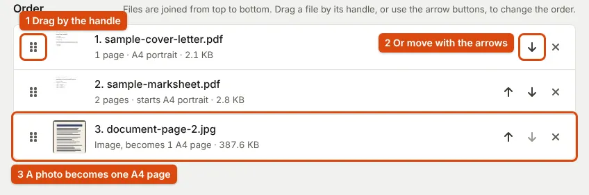
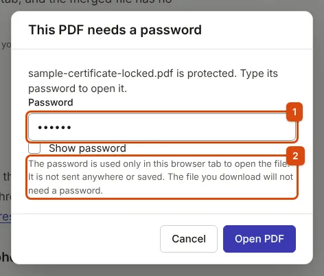
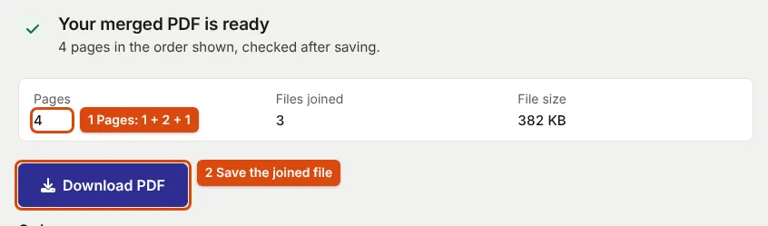

How to Merge PDF Files and Photos into One PDF
Add the files, drag them into order, type a password if a file asks for one, and download one PDF. Photos become A4 pages on the way.
What this tutorial covers
Merge PDF joins several files into one PDF in your browser. It takes PDFs as they are, so typed text stays sharp and selectable, and it turns photos or scans into pages. This page gives the clicks. Whether a form wants one file at all, which order to use and how to capture pages well are covered in combining documents into one PDF; if the result is over a size limit, see getting a scanned PDF under a portal's limit.
Before you start
- The files: PDFs, and photos or scans as JPG, PNG or WebP. Up to 50 files, 100 MB each and 500 MB in all.
- The order the form or employer asks for, if any.
- The password of any protected PDF, such as a statement or a mark sheet downloaded from a portal. Without it, the file cannot be opened.
- Two minutes for a handful of files.
Step 1: Add the files
Open Merge PDF and select Choose files, or drag the files onto the box that says Add the PDFs to join. You can select several at once and add more later with Add files.
What you see: a bar that counts the files, pages and total size, for example 3 files · 4 pages · 383 KB, and under Order one row per file with its page count and page size. A PDF row reads like 2 pages · starts A4 portrait; a photo reads Image, becomes 1 A4 page.
Step 2: Put them in order
Files are joined from top to bottom. Drag a row by its handle on the left, or use the up and down arrow buttons on the right. With the keyboard, focus the handle and use the arrow keys. The cross removes a file; Remove all clears the list.

A photo or scan becomes one A4 page, portrait or landscape to suit the picture, with the image fitted to the page and its proportions kept. To control the page size or margins of photos yourself, build them into a PDF first with image to PDF and merge that.
Step 3: Open a password-protected PDF
When a file is protected, a window opens: This PDF needs a password, with the file's name. Type the password and select Open PDF. Show password lets you check what you typed. The window explains that the password is used only in this browser tab to open the file, is not sent anywhere or saved, and that the file you download will not need a password.

Once it opens, the row adds password given after the file size. The merged PDF is saved without any password, so anyone with the file can open it. If you select Cancel, that file is left out and a message says it was not opened because no password was given.
Step 4: Name the file and merge
Under Output, type a name in File name; it starts as merged. A name with your own name and the contents, such as priya-sharma-certificates, is easier for a recruiter to file. The line above the button says what will happen, for example 4 pages from 3 files will be joined in the order shown. Select Merge files.
Step 5: Check the result and download
After merging, the PDF is opened again and its pages are counted before it is offered. What you see: Your merged PDF is ready, the line 4 pages in the order shown, checked after saving., the number of pages, the number of files joined and the file size. Select Download PDF.

Open the downloaded file and scroll through every page before you upload it: none missing, none upside down, the smallest text readable.
What you get
- One PDF with every page of every file, in the order you set. Each PDF page keeps its own size and orientation.
- Text from the original PDFs still selectable; photos as A4 pages.
- No password on the result, even when an input had one.
- Bookmarks and fillable form fields from the original files are not carried over.
If something goes wrong
"That password is not right."
The full message adds Check it and try again; passwords are case sensitive. Check capital letters, and whether the portal that issued the file told you the format, such as a date of birth.
A file is refused when you add it
The tool reads the first bytes of every file rather than trusting its name. A text file renamed to .pdf is refused as a plain text file, and a PDF that was cut short while downloading is refused as incomplete: the end of the file is missing. Download the file again from its source. (A photo renamed to .pdf is simply added as a photo.)
The merged file is too large for the portal
Photos are the usual cause. Compress the result with Compress PDF, or shrink the photos first with the image compressor and merge again.
The pages are in the wrong order
The file list is still there after merging. Reorder the rows and select Merge files again; a page within one PDF can be moved with Organise PDF pages.
Sources
- Library of Congress: PDF (Portable Document Format) Family
- Library of Congress: PDF 2.0, ISO 32000-2, including how PDF encryption works
- MDN Web Docs: Image file type and format guide
Every step on this page was followed in the current Merge PDF tool with our sample PDFs, and the result was checked independently with pdfinfo. Found a mistake? Report an error.